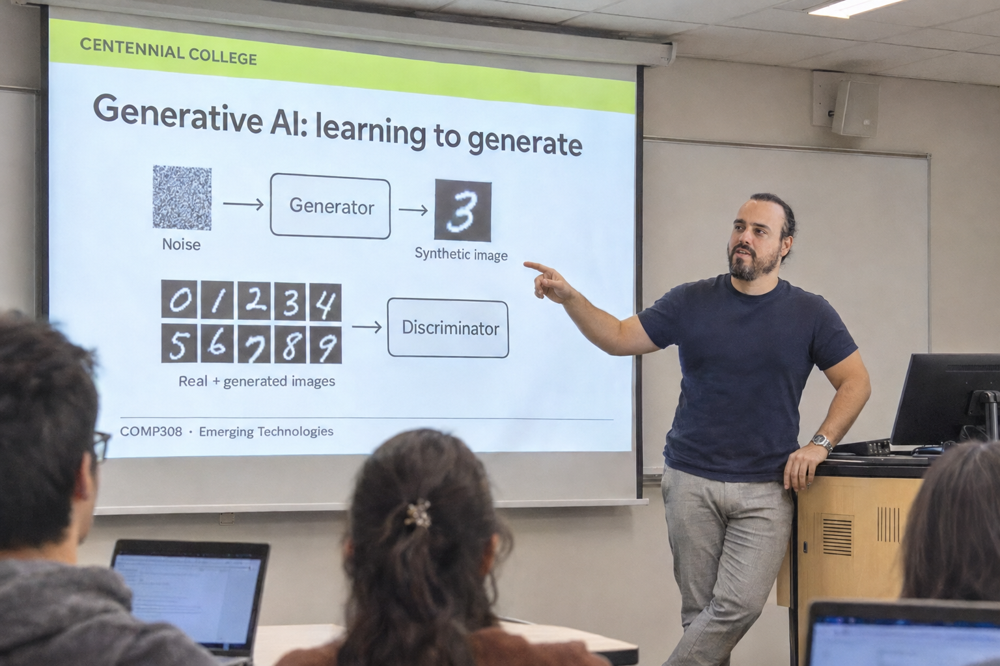
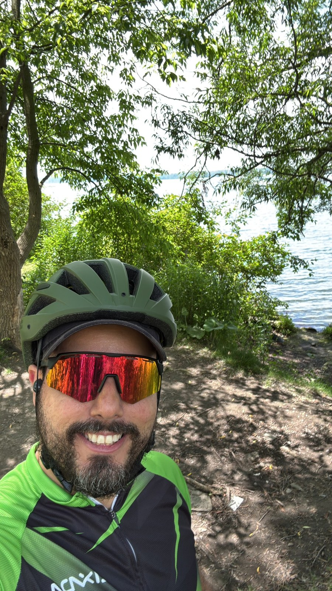

About me
Hi, I’m Thiago.
I work with software architecture, applied AI, and cloud platforms. I also teach emerging technologies and build Games4Fun with my partners.
Away from the screen, there’s cycling, life with my family, and a collection of games and consoles that keeps finding room for one more.
Currently studying at Athabasca UniversityMSc in Computing and Information Systems
Focus: Artificial Intelligence & Intelligent Systems
A little more context
My work includes software and AI projects through Castle, fractional CTO work at MySelfRep, and teaching at Centennial College. Games4Fun is a company I built with other partners.
Projects
Study & technology
Athabasca University In progress
MSc in Computing and Information Systems
Focused on Artificial Intelligence and Intelligent Systems. Learning alongside the practical work of building software and teaching.
About the programEarlier education
- Master of Business Administration (MBA)UNA University Center · Brazil
- Advanced Diploma in Software Engineering TechnologyCentennial College · Canada
- Associate Degree in Systems Analysis & Software EngineeringUNA University Center · Brazil
Professional credentials
AWS Certified Solutions Architect – Associate · CISSP (ISC2) · COBIT 5 Foundation (ISACA) · Certified ScrumMaster (Scrum Alliance) · Six Sigma Black Belt · PMP (earned 2012)
- Software
- Python · TypeScript / JavaScript · C# / .NET · React
- AI
- Retrieval · embeddings · LangGraph · model integration
- Platforms
- AWS · Azure · Google Cloud · Terraform · CI/CD
Concept scenes

Teaching and Castle are AI-generated scenes based on my photos. Games4Fun features generated showcase artwork using our game logos.
Outside work

Let’s talk
Software, applied AI, teaching, games—or a good conversation about something you’re making.